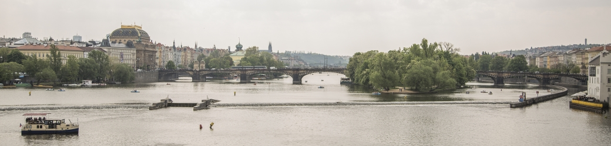

Карамшук Володимир Дмитрович
місце і дата народження: 30.04.2001, м. Полтава; |
| Освіта: ЗШ №26 м. Полтава; |
НТУУ "КПІ"
Хоббі:
- Велоспорт;
- Компютерні ігри;
- Туризм
Улюблені фільми:
- Не час помирати" 2021р.
- "Казино рояль" 2006р.
- "Золоте око" 1995р.
| Пра́га (чеськ. Praha) — столиця та найбільше місто Чеської Республіки, адміністративний центр Середньочеського краю,
а також двох його районів Прага-Захід та Прага-Схід.
Прага розташована в західній частині Чехії, в історичній області Богемія.
У X-XII століттях Прага була столицею Чеського князівства,
у XII-XVIII століттях — столицею Чеського Королівства, у 1806—1867 рр. — столицею Чеського королівства у складі Австрійської імперії,
у 1867—1918 рр. — провінційним містом Австро-Угорщини, у 1918–1939 та 1945–1948 рр. — столицею Чехословацької Республіки,
у 1939–1945 рр. — німецького протекторату Богемії та Моравії, у 1948–1990 рр. — Чехословацької Соціалістичної Республіки,
у 1990–1992 рр. — Чехословацької Федеративної Республіки, а з 1993-го — столицею Чеської Республіки. |

|